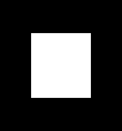
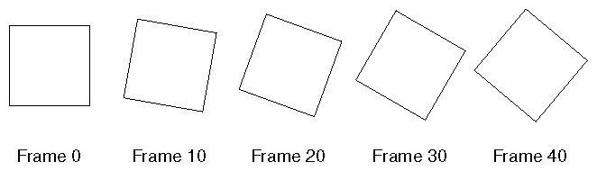

After reading this chapter, you'll be able to do the following:
Identify different levels of rendering complexity
Understand the basic structure of an OpenGL program
Recognize OpenGL command syntax
Understand in general terms how to animate an OpenGL program
"A Very Simple OpenGL Program" presents a small OpenGL program and briefly
discusses it. This section also defines a few basic computer-graphics terms.
"OpenGL Command Syntax" explains some of the conventions and notations
used by OpenGL commands.
"OpenGL as a State Machine" describes the use of state variables in
OpenGL and the commands for querying, enabling, and disabling states.
"OpenGL-related Libraries" describes sets of OpenGL-related routines,
including an auxiliary library specifically written for this book to simplify
programming examples.
"Animation" explains in general terms how to create pictures on the screen that move, or animate.
OpenGL is designed to work efficiently even if the computer that displays the graphics you create isn't the computer that runs your graphics program. This might be the case if you work in a networked computer environment where many computers are connected to one another by wires capable of carrying digital data. In this situation, the computer on which your program runs and issues OpenGL drawing commands is called the client, and the computer that receives those commands and performs the drawing is called the server. The format for transmitting OpenGL commands (called the protocol) from the client to the server is always the same, so OpenGL programs can work across a network even if the client and server are different kinds of computers. If an OpenGL program isn't running across a network, then there's only one computer, and it is both the client and the server.
OpenGL is designed as a streamlined, hardware-independent interface to be implemented on many different hardware platforms. To achieve these qualities, no commands for performing windowing tasks or obtaining user input are included in OpenGL; instead, you must work through whatever windowing system controls the particular hardware you're using. Similarly, OpenGL doesn't provide high-level commands for describing models of three-dimensional objects. Such commands might allow you to specify relatively complicated shapes such as automobiles, parts of the body, airplanes, or molecules. With OpenGL, you must build up your desired model from a small set of geometric primitive - points, lines, and polygons. (A sophisticated library that provides these features could certainly be built on top of OpenGL - in fact, that's what Open Inventor is. See "OpenGL-related Libraries" for more information about Open Inventor.)
Now that you know what OpenGL doesn't do, here's what it does do. Take a look at the color plates - they illustrate typical uses of OpenGL. They show the scene on the cover of this book, drawn by a computer (which is to say, rendered) in successively more complicated ways. The following paragraphs describe in general terms how these pictures were made.
Note that you can see portions of objects that would be obscured if
the objects were solid rather than wireframe. For example, you can see
the entire model of the hills outside the window even though most of this
model is normally hidden by the wall of the room. The globe appears to
be nearly solid because it's composed of hundreds of colored blocks, and
you see the wireframe lines for all the edges of all the blocks, even those
forming the back side of the globe. The way the globe is constructed gives
you an idea of how complex objects can be created by assembling lower-level
objects.
Figure J-2 shows a depth-cued version of the same wireframe scene.
Note that the lines farther from the eye are dimmer, just as they would
be in real life, thereby giving a visual cue of depth.
Figure J-3 shows an antialiased version of the wireframe scene.
Antialiasing is a technique for reducing the jagged effect created when
only portions of neighboring pixels properly belong to the image being
drawn. Such jaggies are usually the most visible with near-horizontal or
near-vertical lines.
Figure J-4 shows a flat-shaded version of the scene. The objects
in the scene are now shown as solid objects of a single color. They appear
"flat" in the sense that they don't seem to respond to the lighting conditions
in the room, so they don't appear smoothly rounded.
Figure J-5 shows a lit, smooth-shaded version of the scene. Note
how the scene looks much more realistic and three-dimensional when the
objects are shaded to respond to the light sources in the room; the surfaces
of the objects now look smoothly rounded.
Figure J-6 adds shadows and textures to the previous version
of the scene. Shadows aren't an explicitly defined feature of OpenGL (there
is no "shadow command"), but you can create them yourself using the techniques
described in Chapter 13 . Texture mapping allows you to apply a two-dimensional
texture to a three-dimensional object. In this scene, the top on the table
surface is the most vibrant example of texture mapping. The walls, floor,
table surface, and top (on top of the table) are all texture mapped.
Figure J-7 shows a motion-blurred object in the scene. The sphinx
(or dog, depending on your Rorschach tendencies) appears to be captured
as it's moving forward, leaving a blurred trace of its path of motion.
Figure J-8 shows the scene as it's drawn for the cover of the book from a different viewpoint. This plate illustrates that the image really is a snapshot of models of three-dimensional objects.
Figure J-10 shows the depth-of-field effect, which simulates the inability of a camera lens to maintain all objects in a photographed scene in focus. The camera focuses on a particular spot in the scene, and objects that are significantly closer or farther than that spot are somewhat blurred.
Arrange the objects in three-dimensional space and select the desired
vantage point for viewing the composed scene.
Calculate the color of all the objects. The color might be explicitly
assigned by the application, determined from specified lighting conditions,
or obtained by pasting a texture onto the objects.
Convert the mathematical description of objects and their associated color information to pixels on the screen. This process is called rasterization.
Before you look at an OpenGL program, let's go over a few terms. Rendering, which you've already seen used, is the process by which a computer creates images from models. These models, or objects, are constructed from geometric primitives - points, lines, and polygons - that are specified by their vertices.
The final rendered image consists of pixels drawn on the screen; a pixel - short for picture element - is the smallest visible element the display hardware can put on the screen. Information about the pixels (for instance, what color they're supposed to be) is organized in system memory into bitplanes. A bitplane is an area of memory that holds one bit of information for every pixel on the screen; the bit might indicate how red a particular pixel is supposed to be, for example. The bitplanes are themselves organized into a framebuffer, which holds all the information that the graphics display needs to control the intensity of all the pixels on the screen.
Now look at an OpenGL program. Example 1-1 renders a white rectangle on a black background, as shown in Figure 1-1 .

Figure 1-1 : A White Rectangle on a Black Background
Example 1-1 : A Simple OpenGL Program
#include <whateverYouNeed.h>
main() {
OpenAWindowPlease();
glClearColor(0.0, 0.0, 0.0, 0.0);
glClear(GL_COLOR_BUFFER_BIT);
glColor3f(1.0, 1.0, 1.0);
glOrtho(-1.0, 1.0, -1.0, 1.0, -1.0, 1.0);
glBegin(GL_POLYGON);
glVertex2f(-0.5, -0.5);
glVertex2f(-0.5, 0.5);
glVertex2f(0.5, 0.5);
glVertex2f(0.5, -0.5);
glEnd();
glFlush();
KeepTheWindowOnTheScreenForAWhile();
}
The first line of the main() routine opens a window on the screen:
The OpenAWindowPlease() routine is meant as a placeholder for a
window system-specific routine. The next two lines are OpenGL commands
that clear the window to black: glClearColor() establishes what
color the window will be cleared to, and glClear() actually clears
the window. Once the color to clear to is set, the window is cleared to
that color whenever glClear() is called. The clearing color can
be changed with another call to glClearColor(). Similarly, the glColor3f()
command establishes what color to use for drawing objects - in this case,
the color is white. All objects drawn after this point use this color,
until it's changed with another call to set the color.
The next OpenGL command used in the program, glOrtho(), specifies the coordinate system OpenGL assumes as it draws the final image and how the image gets mapped to the screen. The next calls, which are bracketed by glBegin() and glEnd(), define the object to be drawn - in this example, a polygon with four vertices. The polygon's "corners" are defined by the glVertex2f() commands. As you might be able to guess from the arguments, which are (x, y) coordinate pairs, the polygon is a rectangle.
Finally, glFlush() ensures that the drawing commands are actually executed, rather than stored in a buffer awaiting additional OpenGL commands. The KeepTheWindowOnTheScreenForAWhile() placeholder routine forces the picture to remain on the screen instead of immediately disappearing.
You might also have noticed some seemingly extraneous letters appended to some command names (the 3f in glColor3f(), for example). It's true that the Color part of the command name is enough to define the command as one that sets the current color. However, more than one such command has been defined so that you can use different types of arguments. In particular, the 3 part of the suffix indicates that three arguments are given; another version of the Color command takes four arguments. The f part of the suffix indicates that the arguments are floating-point numbers. Some OpenGL commands accept as many as eight different data types for their arguments. The letters used as suffixes to specify these data types for ANSI C implementations of OpenGL are shown in Table 1-1 , along with the corresponding OpenGL type definitions. The particular implementation of OpenGL that you're using might not follow this scheme exactly; an implementation in C++ or Ada, for example, wouldn't need to.
| Suffix | Data Type | Typical Corresponding C-Language Type | OpenGL Type Definition |
|---|---|---|---|
| b | 8-bit integer | signed char | GLbyte |
| s | 16-bit integer | short | GLshort |
| i | 32-bit integer | long | GLint, GLsizei |
| f | 32-bit floating-point | float | GLfloat, GLclampf |
| d | 64-bit floating-point | double | GLdouble, GLclampd |
| ub | 8-bit unsigned integer | unsigned char | GLubyte, GLboolean |
| us | 16-bit unsigned integer | unsigned short | GLushort |
| ui | 32-bit unsigned integer | unsigned long | GLuint, GLenum, GLbitfield |
Thus, the two commands
glVertex2i(1, 3); glVertex2f(1.0, 3.0);are equivalent, except that the first specifies the vertex's coordinates as 32-bit integers and the second specifies them as single-precision floating-point numbers.
Some OpenGL commands can take a final letter v, which indicates that the command takes a pointer to a vector (or array) of values rather than a series of individual arguments. Many commands have both vector and nonvector versions, but some commands accept only individual arguments and others require that at least some of the arguments be specified as a vector. The following lines show how you might use a vector and a nonvector version of the command that sets the current color:
glColor3f(1.0, 0.0, 0.0);
float color_array[] = {1.0, 0.0, 0.0};
glColor3fv(color_array);
In the rest of this guide (except in actual code examples), OpenGL commands
are referred to by their base names only, and an asterisk is included to
indicate that there may be more to the command name. For example, glColor*()
stands for all variations of the command you use to set the current color.
If we want to make a specific point about one version of a particular command,
we include the suffix necessary to define that version. For example, glVertex*v()
refers to all the vector versions of the command you use to specify vertices.
Finally, OpenGL defines the constant GLvoid; if you're programming in C, you can use this instead of void.
Each state variable or mode has a default value, and at any point you can query the system for each variable's current value. Typically, you use one of the four following commands to do this: glGetBooleanv(), glGetDoublev(), glGetFloatv(), or glGetIntegerv(). Which of these commands you select depends on what data type you want the answer to be given in. Some state variables have a more specific query command (such as glGetLight*(), glGetError(), or glGetPolygonStipple()). In addition, you can save and later restore the values of a collection of state variables on an attribute stack with the glPushAttrib() and glPopAttrib() commands. Whenever possible, you should use these commands rather than any of the query commands, since they're likely to be more efficient.
The complete list of state variables you can query is found in Appendix B . For each variable, the appendix also lists the glGet*() command that returns the variable's value, the attribute class to which it belongs, and the variable's default value.
The OpenGL Extension to the X Window System (GLX) provides a means of
creating an OpenGL context and associating it with a drawable window on
a machine that uses the X Window System. GLX is provided as an adjunct
to OpenGL. It's described in more detail in both Appendix D and the OpenGL
Reference Manual. One of the GLX routines (for swapping framebuffers)
is described in "Animation." GLX routines use the prefix glX.
The OpenGL Programming Guide Auxiliary Library was written specifically
for this book to make programming examples simpler and yet more complete.
It's the subject of the next section, and it's described in more detail
in Appendix E . Auxiliary library routines use the prefix aux. "How
to Obtain the Sample Code" describes how to obtain the source code for
the auxiliary library.
Open Inventor is an object-oriented toolkit based on OpenGL that provides objects and methods for creating interactive three-dimensional graphics applications. Available from Silicon Graphics and written in C++, Open Inventor provides pre-built objects and a built-in event model for user interaction, high-level application components for creating and editing three-dimensional scenes, and the ability to print objects and exchange data in other graphics formats.
In addition, since OpenGL's drawing commands are limited to those that generate simple geometric primitives (points, lines, and polygons), the auxiliary library includes several routines that create more complicated three-dimensional objects such as a sphere, a torus, and a teapot. This way, snapshots of program output can be interesting to look at. If you have an implementation of OpenGL and this auxiliary library on your system, the examples in this book should run without change when linked with them.
The auxiliary library is intentionally simple, and it would be difficult to build a large application on top of it. It's intended solely to support the examples in this book, but you may find it a useful starting point to begin building real applications. The rest of this section briefly describes the auxiliary library routines so that you can follow the programming examples in the rest of this book. Turn to Appendix E for more details about these routines.
auxInitPosition() tells auxInitWindow() where to position
a window on the screen.
auxInitDisplayMode() tells auxInitWindow() whether to create an RGBA or color-index window. You can also specify a single- or double-buffered window. (If you're working in color-index mode, you'll want to load certain colors into the color map; use auxSetOneColor() to do this.) Finally, you can use this routine to indicate that you want the window to have an associated depth, stencil, and/or accumulation buffer.
auxKeyFunc() and auxMouseFunc() allow you to link a keyboard key or a mouse button with a routine that's invoked when the key or mouse button is pressed or released.
sphere octahedron
cube dodecahedron
torus icosahedron
cylinder teapot
cone
You can draw these objects as wireframes or as solid shaded objects with surface normals defined. For example, the routines for a sphere and a torus are as follows:
void auxWireSphere(GLdouble radius);
void auxSolidSphere(GLdouble radius);
void auxWireTorus(GLdouble innerRadius, GLdouble outerRadius);
void auxSolidTorus(GLdouble innerRadius, GLdouble outerRadius);
All these models are drawn centered at the origin. When drawn with unit scale factors, these models fit into a box with all coordinates from -1 to 1. Use the arguments for these routines to scale the objects.
Example 1-2 : A Simple OpenGL Program Using the Auxiliary Library: simple.c
#include <GL/gl.h>
#include "aux.h"
int main(int argc, char** argv)
{
auxInitDisplayMode (AUX_SINGLE | AUX_RGBA);
auxInitPosition (0, 0, 500, 500);
auxInitWindow (argv[0]);
glClearColor (0.0, 0.0, 0.0, 0.0);
glClear(GL_COLOR_BUFFER_BIT);
glColor3f(1.0, 1.0, 1.0);
glMatrixMode(GL_PROJECTION);
glLoadIdentity();
glOrtho(-1.0, 1.0, -1.0, 1.0, -1.0, 1.0);
glBegin(GL_POLYGON);
glVertex2f(-0.5, -0.5);
glVertex2f(-0.5, 0.5);
glVertex2f(0.5, 0.5);
glVertex2f(0.5, -0.5);
glEnd();
glFlush();
sleep(10);
}
In a movie theater, motion is achieved by taking a sequence of pictures (24 per second), and then projecting them at 24 per second on the screen. Each frame is moved into position behind the lens, the shutter is opened, and the frame is displayed. The shutter is momentarily closed while the film is advanced to the next frame, then that frame is displayed, and so on. Although you're watching 24 different frames each second, your brain blends them all into a smooth animation. (The old Charlie Chaplin movies were shot at 16 frames per second and are noticeably jerky.) In fact, most modern projectors display each picture twice at a rate of 48 per second to reduce flickering. Computer-graphics screens typically refresh (redraw the picture) approximately 60 to 76 times per second, and some even run at about 120 refreshes per second. Clearly, 60 per second is smoother than 30, and 120 is marginally better than 60. Refresh rates faster than 120, however, are beyond the point of diminishing returns, since the human eye is only so good.
The key idea that makes motion picture projection work is that when it is displayed, each frame is complete. Suppose you try to do computer animation of your million-frame movie with a program like this:
open_window();
for (i = 0; i < 1000000; i++) {
clear_the_window();
draw_frame(i);
wait_until_a_24th_of_a_second_is_over();
}
If you add the time it takes for your system to clear the screen and to
draw a typical frame, this program gives more and more disturbing results
depending on how close to 1/24 second it takes to clear and draw. Suppose
the drawing takes nearly a full 1/24 second. Items drawn first are visible
for the full 1/24 second and present a solid image on the screen; items
drawn toward the end are instantly cleared as the program starts on the
next frame, so they present at best a ghostlike image, since for most of
the 1/24 second your eye is viewing the cleared background instead of the
items that were unlucky enough to be drawn last. The problem is that this
program doesn't display completely drawn frames; instead, you watch the
drawing as it happens.
An easy solution is to provide double-buffering - hardware or software that supplies two complete color buffers. One is displayed while the other is being drawn. When the drawing of a frame is complete, the two buffers are swapped, so the one that was being viewed is now used for drawing, and vice versa. It's like a movie projector with only two frames in a loop; while one is being projected on the screen, an artist is desperately erasing and redrawing the frame that's not visible. As long as the artist is quick enough, the viewer notices no difference between this setup and one where all the frames are already drawn and the projector is simply displaying them one after the other. With double-buffering, every frame is shown only when the drawing is complete; the viewer never sees a partially drawn frame.
A modified version of the preceding program that does display smoothly animated graphics might look like this:
open_window_in_double_buffer_mode();
for (i = 0; i < 1000000; i++) {
clear_the_window();
draw_frame(i);
swap_the_buffers();
}
In addition to simply swapping the viewable and drawable buffers, the swap_the_buffers()
routine waits until the current screen refresh period is over so that the
previous buffer is completely displayed. This routine also allows the new
buffer to be completely displayed, starting from the beginning. Assuming
that your system refreshes the display 60 times per second, this means
that the fastest frame rate you can achieve is 60 frames per second, and
if all your frames can be cleared and drawn in under 1/60 second, your
animation will run smoothly at that rate.
What often happens on such a system is that the frame is too complicated to draw in 1/60 second, so each frame is displayed more than once. If, for example, it takes 1/45 second to draw a frame, you get 30 frames per second, and the graphics are idle for 1/30-1/45=1/90 second per frame. Although 1/90 second of wasted time might not sound bad, it's wasted each 1/30 second, so actually one-third of the time is wasted.
In addition, the video refresh rate is constant, which can have some unexpected performance consequences. For example, with the 1/60 second per refresh monitor and a constant frame rate, you can run at 60 frames per second, 30 frames per second, 20 per second, 15 per second, 12 per second, and so on (60/1, 60/2, 60/3, 60/4, 60/5, ...). That means that if you're writing an application and gradually adding features (say it's a flight simulator, and you're adding ground scenery), at first each feature you add has no effect on the overall performance - you still get 60 frames per second. Then, all of a sudden, you add one new feature, and your performance is cut in half because the system can't quite draw the whole thing in 1/60 of a second, so it misses the first possible buffer-swapping time. A similar thing happens when the drawing time per frame is more than 1/30 second - the performance drops from 30 to 20 frames per second, giving a 33 percent performance hit.
Another problem is that if the scene's complexity is close to any of the magic times (1/60 second, 2/60 second, 3/60 second, and so on in this example), then because of random variation, some frames go slightly over the time and some slightly under, and the frame rate is irregular, which can be visually disturbing. In this case, if you can't simplify the scene so that all the frames are fast enough, it might be better to add an intentional tiny delay to make sure they all miss, giving a constant, slower, frame rate. If your frames have drastically different complexities, a more sophisticated approach might be necessary.
Interestingly, the structure of real animation programs does not differ too much from this description. Usually, the entire buffer is redrawn from scratch for each frame, as it is easier to do this than to figure out what parts require redrawing. This is especially true with applications such as three-dimensional flight simulators where a tiny change in the plane's orientation changes the position of everything outside the window.
In most animations, the objects in a scene are simply redrawn with different transformations - the viewpoint of the viewer moves, or a car moves down the road a bit, or an object is rotated slightly. If significant modifications to a structure are being made for each frame where there's significant recomputation, the attainable frame rate often slows down. Keep in mind, however, that the idle time after the swap_the_buffers() routine can often be used for such calculations.
OpenGL doesn't have a swap_the_buffers() command because the feature might not be available on all hardware and, in any case, it's highly dependent on the window system. However, GLX provides such a command, for use on machines that use the X Window System:
void glXSwapBuffers(Display *dpy, Window window);Example 1-3 illustrates the use of glXSwapBuffers() in an example that draws a square that rotates constantly, as shown in Figure 1-2 .

Figure 1-2 : A Double-Buffered Rotating Square
Example 1-3 : A Double-Buffered Program: double.c
#include <GL/gl.h>
#include <GL/glu.h>
#include <GL/glx.h>
#include "aux.h"
static GLfloat spin = 0.0;
void display(void)
{
glClear(GL_COLOR_BUFFER_BIT);
glPushMatrix();
glRotatef(spin, 0.0, 0.0, 1.0);
glRectf(-25.0, -25.0, 25.0, 25.0);
glPopMatrix();
glFlush();
glXSwapBuffers(auxXDisplay(), auxXWindow());
}
void spinDisplay(void)
{
spin = spin + 2.0;
if (spin > 360.0)
spin = spin - 360.0;
display();
}
void startIdleFunc(AUX_EVENTREC *event)
{
auxIdleFunc(spinDisplay);
}
void stopIdleFunc(AUX_EVENTREC *event)
{
auxIdleFunc(0);
}
void myinit(void)
{
glClearColor(0.0, 0.0, 0.0, 1.0);
glColor3f(1.0, 1.0, 1.0);
glShadeModel(GL_FLAT);
}
void myReshape(GLsizei w, GLsizei h)
{
glViewport(0, 0, w, h);
glMatrixMode(GL_PROJECTION);
glLoadIdentity();
if (w <= h)
glOrtho (-50.0, 50.0, -50.0*(GLfloat)h/(GLfloat)w,
50.0*(GLfloat)h/(GLfloat)w, -1.0, 1.0);
else
glOrtho (-50.0*(GLfloat)w/(GLfloat)h,
50.0*(GLfloat)w/(GLfloat)h, -50.0, 50.0, -1.0, 1.0);
glMatrixMode(GL_MODELVIEW);
glLoadIdentity ();
}
int main(int argc, char** argv)
{
auxInitDisplayMode(AUX_DOUBLE | AUX_RGBA);
auxInitPosition(0, 0, 500, 500);
auxInitWindow(argv[0]);
myinit();
auxReshapeFunc(myReshape);
auxIdleFunc(spinDisplay);
auxMouseFunc(AUX_LEFTBUTTON, AUX_MOUSEDOWN, startIdleFunc);
auxMouseFunc(AUX_MIDDLEBUTTON, AUX_MOUSEDOWN, stopIdleFunc);
auxMainLoop(display);
}